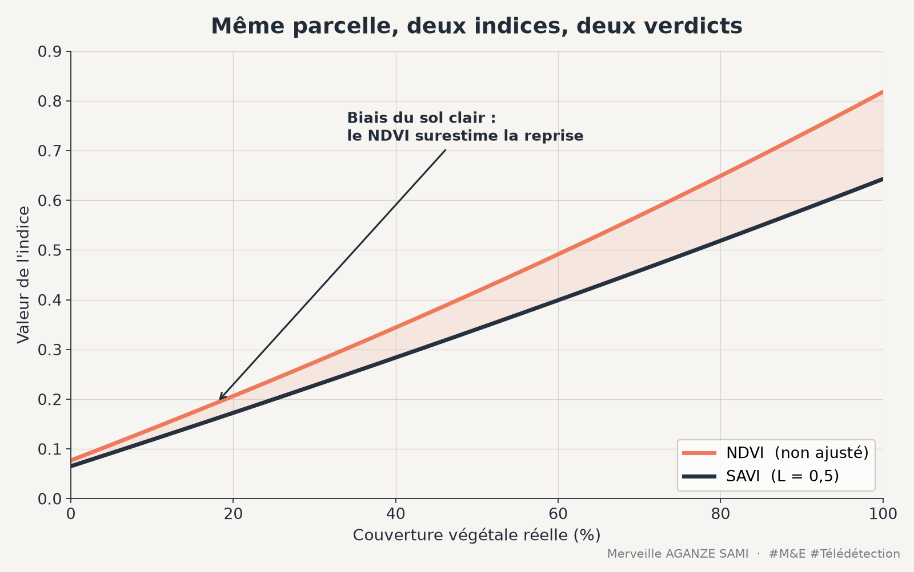

Monitoring vegetation recovery on a restoration site commonly relies on a vegetation index computed from satellite imagery. The most frequent choice — the normalised difference vegetation index — has, in semi-arid settings, a limitation that directly affects the resulting indicator: its value depends in part on the properties of the soil visible between plants.
This dependence is not an implementation flaw but a property of the signal. Where vegetation cover occupies a minority fraction of the pixel, the measured reflectance results from a mixture of vegetation and substrate. The index then responds to both components jointly.
1. What NDVI measures and where it loses precision
The normalised difference vegetation index combines reflectance in the red and near infrared. Chlorophyll-bearing vegetation absorbs strongly in the red and reflects strongly in the near infrared; the contrast between these two bands is a robust descriptor of photosynthetic activity, long established for canopy monitoring (Tucker, 1979).
Two regimes nonetheless limit its scope. At high cover fractions the index saturates: beyond a certain leaf area index, an increase in biomass no longer translates into a measurable change. At low cover fractions it becomes sensitive to the soil background: bright and dark soils produce different values for the same cover. Both behaviours are documented in work analysing index sensitivity to canopy parameters (Baret & Guyot, 1991).
The soil line. In a red–near infrared plane, bare soils distribute along a straight line whose position depends on their composition and moisture. As NDVI is not constructed relative to this line, a displacement along the soil line translates into an index change at constant vegetation cover. It is precisely this variation that soil-adjusted indices seek to neutralise.
2. The SAVI adjustment factor
The soil-adjusted vegetation index introduces into the formulation a correction term, generally denoted L, which shifts the origin of the frame so that vegetation isolines run approximately parallel to the soil line. The correction is calibrated to cover density: an intermediate value around 0.5 corresponds to medium cover; a high value suits very sparse cover; a value of zero returns to the NDVI formulation (Huete, 1988).
This parameter constitutes an assumption about the canopy, which introduces an operational difficulty: on a site under restoration, density is precisely what changes between the start and the end of monitoring. Fixing L once and for all applies a correction suited to an intermediate state, and more approximate at both ends of the series.
3. MSAVI: an adjustment computed per pixel
The modified formulation resolves this difficulty by determining the adjustment term analytically, from observed reflectances, rather than fixing it a priori. The correction thus adapts locally to cover density, making it better suited to heterogeneous surfaces and to series spanning substantial changes in cover (Qi et al., 1994).
In return, the resulting index has no explicit parameter to document, which makes interpreting its absolute values less direct. It lends itself well to relative reading — change over time, comparison between plots — less well to comparison against thresholds drawn from the literature.
4. Other available formulations
- Optimised index. A lower adjustment value, around 0.16, was proposed from an optimisation over agricultural canopies; it offers a stable compromise without requiring a strong assumption about density (Rondeaux et al., 1996).
- High-biomass indices. For dense canopies, where saturation rather than the soil effect is the dominant problem, two-band formulations designed to improve linearity at high values are more appropriate (Jiang et al., 2008).
- Moisture and bare-soil indices. Where the question concerns the state of the substrate itself — crusting, erosion, exposure — dedicated indices provide complementary information that vegetation indices do not.
5. Consequences for a monitoring indicator
The choice of index is not an inconsequential technical parameter: it determines the value of the reported indicator and its comparability. Three practical consequences follow.
- 1Fix the index in the protocol. A series built from values derived from different indices is not interpretable. The choice must precede collection and appear in the indicator sheet, alongside the image source and the time window.
- 2Document the adjustment parameter. Where an L factor is fixed, its value and rationale form part of the indicator definition.
- 3Calibrate against field observations. The relationship between index value and actual cover fraction varies with soil and canopy type. A few measured plots establish this correspondence locally and convert an index into a quantity a partner can interpret.
- Atmospheric correction. Soil-adjusted indices operate on surface reflectance. Using uncorrected products introduces between-date variability that is confounded with the vegetation signal.
- Acquisition geometry. Solar and viewing angles alter apparent reflectance. Using dates from the same annual period limits this effect.
- Plot size. On small restoration plots, a 10 to 20 metre resolution generates mixed pixels; the indicator then measures the immediate surroundings as much as the plot itself.
Key points
- Over sparse cover, NDVI responds partly to soil brightness
- SAVI neutralises this contribution through an adjustment factor that must be documented
- MSAVI determines that adjustment per pixel, useful where cover changes substantially
- The choice of index conditions comparability across sites and across seasons
- Calibration on a few plots makes the index interpretable by a partner
A restoration indicator built on a vegetation index is not a neutral measurement of cover: it results from a methodological choice whose assumptions must be explicit. Documenting that choice is as much a requirement as documenting a survey protocol.
References
- Baret, F., & Guyot, G. (1991). Potentials and limits of vegetation indices for LAI and APAR assessment. Remote Sensing of Environment, 35(2–3), 161–173. doi.org/10.1016/0034-4257(91)90009-U
- Huete, A. R. (1988). A soil-adjusted vegetation index (SAVI). Remote Sensing of Environment, 25(3), 295–309. doi.org/10.1016/0034-4257(88)90106-X
- Jiang, Z., Huete, A. R., Didan, K., & Miura, T. (2008). Development of a two-band enhanced vegetation index without a blue band. Remote Sensing of Environment, 112(10), 3833–3845. doi.org/10.1016/j.rse.2008.06.006
- Qi, J., Chehbouni, A., Huete, A. R., Kerr, Y. H., & Sorooshian, S. (1994). A modified soil adjusted vegetation index. Remote Sensing of Environment, 48(2), 119–126. doi.org/10.1016/0034-4257(94)90134-1
- Rondeaux, G., Steven, M., & Baret, F. (1996). Optimization of soil-adjusted vegetation indices. Remote Sensing of Environment, 55(2), 95–107. doi.org/10.1016/0034-4257(95)00186-7
- Tucker, C. J. (1979). Red and photographic infrared linear combinations for monitoring vegetation. Remote Sensing of Environment, 8(2), 127–150. doi.org/10.1016/0034-4257(79)90013-0

Merveille Aganze Sami
MEL & Database Management Advisor. 9+ years of experience in monitoring & evaluation, GIS and digitalization with international organizations (GIZ, Enabel) in DR Congo.
Restoration monitoring to equip?
Get in touch